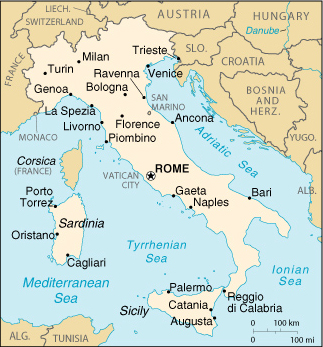

|
Italy | |
| Introduction Geography People Government Economy Communications Transportation Military Transnational Issues | ||
|  | ||
| Italy | Introduction | Top of Page |
| Background: | Italy became a nation-state belatedly - in 1861 when the city-states of the peninsula, along with Sardinia and Sicily, were united under King Victor EMMANUEL. An era of parliamentary government came to a close in the early 1920s when Benito MUSSOLINI established a Fascist dictatorship. His disastrous alliance with Nazi Germany led to Italy's defeat in World War II. A democratic republic replaced the monarchy in 1946 and economic revival followed. Italy was a charter member of NATO and the European Economic Community (EEC). It has been at the forefront of European economic and political unification, joining the European Monetary Union in 1999. Persistent problems include illegal immigration, the ravages of organized crime, corruption, high unemployment, and the low incomes and technical standards of southern Italy compared with the more prosperous north. |
| Italy | Geography | Top of Page |
| Location: | Southern Europe, a peninsula extending into the central Mediterranean Sea, northeast of Tunisia |
| Geographic coordinates: | 42 50 N, 12 50 E |
| Map references: | Europe |
| Area: |
total:
301,230 sq km
land: 294,020 sq km water: 7,210 sq km note: includes Sardinia and Sicily |
| Area - comparative: | slightly larger than Arizona |
| Land boundaries: |
total:
1,932.2 km
border countries: Austria 430 km, France 488 km, Holy See (Vatican City) 3.2 km, San Marino 39 km, Slovenia 232 km, Switzerland 740 km |
| Coastline: | 7,600 km |
| Maritime claims: |
continental shelf:
200-m depth or to the depth of exploitation
territorial sea: 12 NM |
| Climate: | predominantly Mediterranean; Alpine in far north; hot, dry in south |
| Terrain: | mostly rugged and mountainous; some plains, coastal lowlands |
| Elevation extremes: |
lowest point:
Mediterranean Sea 0 m
highest point: Mont Blanc (Monte Bianco) 4,807 m |
| Natural resources: | mercury, potash, marble, sulfur, natural gas and crude oil reserves, fish, coal, arable land |
| Land use: |
arable land:
31%
permanent crops: 10% permanent pastures: 15% forests and woodland: 23% other: 21% (1993 est.) |
| Irrigated land: | 27,100 sq km (1993 est.) |
| Natural hazards: | regional risks include landslides, mudflows, avalanches, earthquakes, volcanic eruptions, flooding; land subsidence in Venice |
| Environment - current issues: | air pollution from industrial emissions such as sulfur dioxide; coastal and inland rivers polluted from industrial and agricultural effluents; acid rain damaging lakes; inadequate industrial waste treatment and disposal facilities |
| Environment - international agreements: |
party to:
Air Pollution, Air Pollution-Nitrogen Oxides, Air Pollution-Sulphur 85, Air Pollution-Sulphur 94, Air Pollution-Volatile Organic Compounds, Antarctic-Environmental Protocol, Antarctic-Marine Living Resources, Antarctic Seals, Antarctic Treaty, Biodiversity, Climate Change, Desertification, Endangered Species, Environmental Modification, Hazardous Wastes, Law of the Sea, Marine Dumping, Nuclear Test Ban, Ozone Layer Protection, Ship Pollution, Tropical Timber 83, Tropical Timber 94, Wetlands, Whaling
signed, but not ratified: Air Pollution-Persistent Organic Pollutants, Climate Change-Kyoto Protocol |
| Geography - note: | strategic location dominating central Mediterranean as well as southern sea and air approaches to Western Europe |
| Italy | People | Top of Page |
| Population: | 57,679,825 (July 2001 est.) |
| Age structure: |
0-14 years:
14.17% (male 4,209,102; female 3,964,765)
15-64 years: 67.48% (male 19,375,742; female 19,546,332) 65 years and over: 18.35% (male 4,368,264; female 6,215,620) (2001 est.) |
| Population growth rate: | 0.07% (2001 est.) |
| Birth rate: | 9.05 births/1,000 population (2001 est.) |
| Death rate: | 10.07 deaths/1,000 population (2001 est.) |
| Net migration rate: | 1.73 migrant(s)/1,000 population (2001 est.) |
| Sex ratio: |
at birth:
1.07 male(s)/female
under 15 years: 1.06 male(s)/female 15-64 years: 0.99 male(s)/female 65 years and over: 0.7 male(s)/female total population: 0.94 male(s)/female (2001 est.) |
| Infant mortality rate: | 5.84 deaths/1,000 live births (2001 est.) |
| Life expectancy at birth: |
total population:
79.14 years
male: 75.97 years female: 82.52 years (2001 est.) |
| Total fertility rate: | 1.18 children born/woman (2001 est.) |
| HIV/AIDS - adult prevalence rate: | 0.35% (1999 est.) |
| HIV/AIDS - people living with HIV/AIDS: | 95,000 (1999 est.) |
| HIV/AIDS - deaths: | 1,000 (1999 est.) |
| Nationality: |
noun:
Italian(s)
adjective: Italian |
| Ethnic groups: | Italian (includes small clusters of German-, French-, and Slovene-Italians in the north and Albanian-Italians and Greek-Italians in the south) |
| Religions: | predominately Roman Catholic with mature Protestant and Jewish communities and a growing Muslim immigrant community |
| Languages: | Italian (official), German (parts of Trentino-Alto Adige region are predominantly German speaking), French (small French-speaking minority in Valle d'Aosta region), Slovene (Slovene-speaking minority in the Trieste-Gorizia area) |
| Literacy: |
definition:
age 15 and over can read and write
total population: 98% (1998) male: NA% female: NA% |
| Italy | Government | Top of Page |
| Country name: |
conventional long form:
Italian Republic
conventional short form: Italy local long form: Repubblica Italiana local short form: Italia former: Kingdom of Italy |
| Government type: | republic |
| Capital: | Rome |
| Administrative divisions: | 20 regions (regioni, singular - regione); Abruzzi, Basilicata, Calabria, Campania, Emilia-Romagna, Friuli-Venezia Giulia, Lazio, Liguria, Lombardia, Marche, Molise, Piemonte, Puglia, Sardegna, Sicilia, Toscana, Trentino-Alto Adige, Umbria, Valle d'Aosta, Veneto |
| Independence: | 17 March 1861 (Kingdom of Italy proclaimed; Italy was not finally unified until 1870) |
| National holiday: | Republic Day, 2 June (1946) |
| Constitution: | 1 January 1948 |
| Legal system: | based on civil law system; appeals treated as new trials; judicial review under certain conditions in Constitutional Court; has not accepted compulsory ICJ jurisdiction |
| Suffrage: | 18 years of age; universal (except in senatorial elections, where minimum age is 25) |
| Executive branch: |
chief of state:
President Carlo Azeglio CIAMPI (since 13 May 1999)
head of government: Prime Minister (referred to in Italy as the president of the Council of Ministers) Silvio BERLUSCONI (since 10 June 2001) cabinet: Council of Ministers nominated by the prime minister and approved by the president elections: president elected by an electoral college consisting of both houses of Parliament and 58 regional representatives for a seven-year term; election last held 13 May 1999 (next to be held NA May 2006); prime minister appointed by the president and confirmed by parliament election results: Carlo Azeglio CIAMPI elected president; percent of electoral college vote - 70% note: a 12-party government coalition; note - BERLUSCONI's coalition includes Forza Italian, National Alliance, Christian Democratic Center, Christian Northern League |
| Legislative branch: |
bicameral Parliament or Parlamento consists of the Senate or Senato della Repubblica (315 seats elected by popular vote of which 232 are directly elected and 83 are elected by regional proportional representation plus, in addition, there are a small number of senators-for-life including former presidents of the republic; members serve five-year terms) and the Chamber of Deputies or Camera dei Deputati (630 seats; 475 are directly elected, 155 by regional proportional representation; members serve five-year terms)
elections: Senate - last held 13 May 2001 (next to be held NA 2006); Chamber of Deputies - last held 13 May 2001 (next to be held NA 2006) election results: Senate - percent of vote by party - NA%; seats by party - House of Liberties 177 (Forza Italia 82, National Alliance 46, CCD-CDU 29, Northern League 17, others 3), Olive Tree 128 (Democrats of the Left 62, Daisy Alliance 42, Sunflower Alliance 16, Italian Communist Party 3, independents 5), non-affiliated with either coalition 10, senators for life 9; Chamber of Deputies - percent of vote by party - NA%; seats by party - House of Liberties 367 (Forza Italia 189, National Alliance 96, CCD-CDU 40, Northern League 30, others 12), Olive Tree 248 (Democrats of the Left 138, Daisy Alliance 76, Sunflower Alliance 18, Italian Communist Party 9, independents 7), non-affiliated with either coalition 15 |
| Judicial branch: | Constitutional Court or Corte Costituzionale (composed of 15 judges: one-third appointed by the president, one-third elected by Parliament, one-third elected by the ordinary and administrative Supreme Courts) |
| Political parties and leaders: | Center-Left Olive Tree Coalition [Francesco RUTELLI] - Democrats of the Left, Daisy Alliance (including Italian Popular Party, Italian Renewal, Union of Democrats for Europe, The Democrats), Sunflower Alliance (including Green Federation, Italian Democratic Socialists), Italian Communist Party; Christian Democratic Center or CDC [Pier Ferdinando CASINI]; Christian Democratic Union or CDU [Rocco BUTTIGLIONE]; Communist Renewal or RC [Fausto BERTINOTTI]; Forza Italia or FI [Silvio BERLUSCONI]; Green Federation [Grazia FRANCESCATO]; House of Liberties (formerly Freedom Alliance, a center-right coalition) [leader Silvio BERLUSCONI] - Forza Italian, National Alliance, Christian Democratic Center, Christian Democratic Union, Northern League; Italian Communist Party or PdCI [Oliviero DILIBERTO]; Italian Democratic Socialists [Enrico BOSELLI]; Italian Popular Party [Pierluigi CASTAGNETTI]; Italian Renewal [Lamberto DINI]; Italian Social Movement-Tricolored Flame or MSI-FI [Pino RAUTI]; National Alliance or AN [Gianfranco FINI]; Northern League or NL [Umberto BOSSI]; Radical Party (formerly Panella Reformers and Autonomous List) [Marco PANNELLA]; Southern Tyrols People's Party or SVP (German speakers) [Siegfried BRUGGER]; Union of Democrats for Europe [Clemente MASTELLA]; The Democrats [Arturo PARISI] |
| Political pressure groups and leaders: | Italian manufacturers and merchants associations (Confindustria, Confcommercio); organized farm groups (Confcoltivatori, Confagricoltura); Roman Catholic Church; three major trade union confederations (Confederazione Generale Italiana del Lavoro or CGIL [Sergio COFFERATI] which is left wing, Confederazione Italiana dei Sindacati Lavoratori or CISL [Sergio D'ANTONI] which is Catholic centrist, and Unione Italiana del Lavoro or UIL [Pietro LARIZZA] which is lay centrist) |
| International organization participation: | AfDB, AsDB, Australia Group, BIS, BSEC (observer), CCC, CDB (non-regional), CE, CEI, CERN, EAPC, EBRD, ECE, ECLAC, EIB, EMU, ESA, EU, FAO, G- 7, G-10, IADB, IAEA, IBRD, ICAO, ICC, ICFTU, ICRM, IDA, IEA, IFAD, IFC, IFRCS, IHO, ILO, IMF, IMO, Inmarsat, Intelsat, Interpol, IOC, IOM, ISO, ITU, LAIA (observer), MINURSO, NAM (guest), NATO, NEA, NSG, OAS (observer), OECD, OPCW, OSCE, PCA, UN, UNCTAD, UNESCO, UNHCR, UNIDO, UNIFIL, UNIKOM, UNMEE, UNMIBH, UNMIK, UNMOGIP, UNTSO, UPU, WCL, WEU, WHO, WIPO, WMO, WToO, WTrO, ZC |
| Diplomatic representation in the US: |
chief of mission:
Ambassador Ferdinando SALLEO
chancery: 3000 Whitehaven Street NW, Washington, DC 20008 telephone: [1] (202) 612-4400 FAX: [1] (202) 518-2154 consulate(s) general: Boston, Chicago, Houston, Miami, New York, Los Angeles, Philadelphia, and San Francisco consulate(s): Detroit |
| Diplomatic representation from the US: |
chief of mission:
Ambassador (vacant)
embassy: Via Veneto 119/A, 00187-Rome mailing address: PSC 59, Box 100, APO AE 09624 telephone: [39] (06) 46741 FAX: [39] (06) 488-2672 consulate(s) general: Florence, Milan, Naples |
| Flag description: |
three equal vertical bands of green (hoist side), white, and red; similar to the flag of Ireland, which is longer and is green (hoist side), white, and orange; also similar to the flag of the Cote d'Ivoire, which has the colors reversed - orange (hoist side), white, and green
note: inspired by the French flag brought to Italy by Napoleon in 1797 |
| Italy | Economy | Top of Page |
| Economy - overview: | Italy has a diversified industrial economy with roughly the same total and per capita output as France and the UK. This capitalistic economy remains divided into a developed industrial north, dominated by private companies, and a less developed agricultural south, with more than 20% unemployment. Most raw materials needed by industry and more than 75% of energy requirements are imported. Since 1992, Italy has adopted budgets compliant with the requirements of the European Monetary Union (EMU); wage moderation agreements by representatives of government, labor, and employers have helped to bring Italy's inflation into conformity with EMU requirements. Italy's economic performance, however, has lagged behind that of its EU partners and it must work to stimulate employment, promote labor flexibility, reform its expensive pension system, and tackle the informal economy. |
| GDP: | purchasing power parity - $1.273 trillion (2000 est.) |
| GDP - real growth rate: | 2.7% (2000 est.) |
| GDP - per capita: | purchasing power parity - $22,100 (2000 est.) |
| GDP - composition by sector: |
agriculture:
2.5%
industry: 30.4% services: 67.1% (2000 est.) |
| Population below poverty line: | NA% |
| Household income or consumption by percentage share: |
lowest 10%:
3.5%
highest 10%: 21.8% (1995) |
| Inflation rate (consumer prices): | 2.5% (2000) |
| Labor force: | 23.4 million (2000) |
| Labor force - by occupation: | services 61.9%, industry 32.6%, agriculture 5.5% (1999) |
| Unemployment rate: | 10.4% (2000 est.) |
| Budget: |
revenues:
$488 billion
expenditures: $501 billion, including capital expenditures of $NA (2000 est.) |
| Industries: | tourism, machinery, iron and steel, chemicals, food processing, textiles, motor vehicles, clothing, footwear, ceramics |
| Industrial production growth rate: | 1.9% (2000) |
| Electricity - production: | 247.679 billion kWh (1999) |
| Electricity - production by source: |
fossil fuel:
79.09%
hydro: 18.08% nuclear: 0% other: 2.83% (1999) |
| Electricity - consumption: | 272.35 billion kWh (1999) |
| Electricity - exports: | 530 million kWh (1999) |
| Electricity - imports: | 42.539 billion kWh (1999) |
| Agriculture - products: | fruits, vegetables, grapes, potatoes, sugar beets, soybeans, grain, olives; beef, dairy products; fish |
| Exports: | $241.1 billion (f.o.b., 2000) |
| Exports - commodities: | engineering products, textiles and clothing, production machinery, motor vehicles, transport equipment, chemicals; food, beverages and tobacco; minerals and nonferrous metals |
| Exports - partners: | EU 56.8% (Germany 16.4%, France 12.9%, Netherlands 7.1%, Spain 6.3%, Netherlands 2.9%), US 9.5% (1999) |
| Imports: | $231.4 billion (f.o.b., 2000) |
| Imports - commodities: | engineering products, chemicals, transport equipment, energy products, minerals and nonferrous metals, textiles and clothing; food, beverages and tobacco |
| Imports - partners: | EU 61% (Germany 19.3%, France 12.6%, Netherlands 6.3%, Spain 4.4%), US 5.0% (1999) |
| Debt - external: | $NA |
| Economic aid - donor: | ODA, $1.3 billion (1997) |
| Currency: |
Italian lira (ITL); euro (EUR)
note: on 1 January 1999, the EU introduced the euro as a common currency that is now being used by financial institutions in Italy at a fixed rate of 1,936.27 Italian lire per euro and will replace the local currency for all transactions in 2002 |
| Currency code: | ITL; EUR |
| Exchange rates: | euros per US dollar - 1.0659 (January 2001), 1.0854 (2000), 0.9386 (1999); Italian lire per US dollar - 1,688.7 (January 1999), 1,736.2 (1998), 1,703.1 (1997), 1,542.9 (1996) |
| Fiscal year: | calendar year |
| Italy | Communications | Top of Page |
| Telephones - main lines in use: | 25 million (1999) |
| Telephones - mobile cellular: | 20.5 million (1999) |
| Telephone system: |
general assessment:
modern, well developed, fast; fully automated telephone, telex, and data services
domestic: high-capacity cable and microwave radio relay trunks international: satellite earth stations - 3 Intelsat (with a total of 5 antennas - 3 for Atlantic Ocean and 2 for Indian Ocean), 1 Inmarsat (Atlantic Ocean region), and NA Eutelsat; 21 submarine cables |
| Radio broadcast stations: | AM about 100, FM about 4,600, shortwave 9 (1998) |
| Radios: | 50.5 million (1997) |
| Television broadcast stations: | 358 (plus 4,728 repeaters) (1995) |
| Televisions: | 30.3 million (1997) |
| Internet country code: | .it |
| Internet Service Providers (ISPs): | 93 (Italy and Holy See) (2000) |
| Internet users: | 11.6 million (2000) |
| Italy | Transportation | Top of Page |
| Railways: |
total:
19,394 km
standard gauge: 18,071 km 1.435-m gauge; Italian Railways (FS) operates 16,014 km of the total standard gauge routes (11,322 km electrified) narrow gauge: 112 km 1.000-m gauge (112 km electrified); 1,211 km 0.950-m gauge (153 km electrified) (1998) |
| Highways: |
total:
654,676 km
paved: 654,676 km (including 6460 km of expressways) unpaved: 0 km (1997) |
| Waterways: |
2,400 km
note: for various types of commercial traffic, although of limited overall value |
| Pipelines: | crude oil 1,703 km; petroleum products 2,148 km; natural gas 19,400 km |
| Ports and harbors: | Augusta (Sicily), Bagnoli, Bari, Brindisi, Gela, Genoa, La Spezia, Livorno, Milazzo, Naples, Porto Foxi, Porto Torres (Sardinia), Salerno, Savona, Taranto, Trieste, Venice (2001) |
| Merchant marine: |
total:
445 ships (1,000 GRT or over) totaling 8,005,136 GRT/10,556,244 DWT
ships by type: bulk 44, cargo 41, chemical tanker 77, combination ore/oil 4, container 24, liquefied gas 38, multi-functional large-load carrier 1, passenger 11, petroleum tanker 85, refrigerated cargo 1, roll on/roll off 64, short-sea passenger 26, specialized tanker 14, vehicle carrier 15 (2000 est.) |
| Airports: | 135 (2000 est.) |
| Airports - with paved runways: |
total:
97
over 3,047 m: 5 2,438 to 3,047 m: 32 1,524 to 2,437 m: 17 914 to 1,523 m: 31 under 914 m: 12 (2000 est.) |
| Airports - with unpaved runways: |
total:
38
1,524 to 2,437 m: 2 914 to 1,523 m: 18 under 914 m: 18 (2000 est.) |
| Heliports: | 4 (2000 est.) |
| Italy | Military | Top of Page |
| Military branches: | Army, Navy, Air Force, Carabinieri |
| Military manpower - military age: | 18 years of age |
| Military manpower - availability: | males age 15-49: 14,248,674 (2001 est.) |
| Military manpower - fit for military service: | males age 15-49: 12,244,166 (2001 est.) |
| Military manpower - reaching military age annually: | males: 304,369 (2001 est.) |
| Military expenditures - dollar figure: | $20.7 billion (FY00/01) |
| Military expenditures - percent of GDP: | 1.7% (FY00/01) |
| Italy | Transnational Issues | Top of Page |
| Disputes - international: | Croatia and Italy made progress toward resolving a bilateral issue dating from World War II over property and ethnic minority rights |
| Illicit drugs: | important gateway for and consumer of Latin American cocaine and Southwest Asian heroin entering the European market |
{kind=link}
{kind=link}